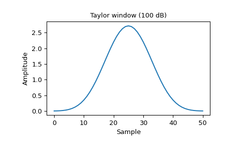
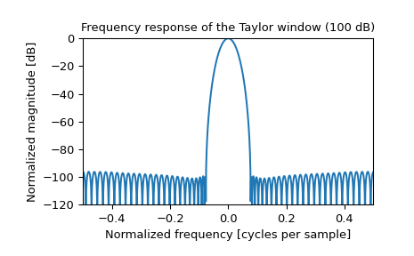

scipy.signal.windows.taylor¶
-
scipy.signal.windows.taylor(M, nbar=4, sll=30, norm=True, sym=True)[source]¶ Return a Taylor window.
The Taylor window taper function approximates the Dolph-Chebyshev window’s constant sidelobe level for a parameterized number of near-in sidelobes, but then allows a taper beyond [2].
The SAR (synthetic aperature radar) community commonly uses Taylor weighting for image formation processing because it provides strong, selectable sidelobe suppression with minimum broadening of the mainlobe [1].
- Parameters
- Mint
Number of points in the output window. If zero or less, an empty array is returned.
- nbarint, optional
Number of nearly constant level sidelobes adjacent to the mainlobe.
- sllfloat, optional
Desired suppression of sidelobe level in decibels (dB) relative to the DC gain of the mainlobe. This should be a positive number.
- normbool, optional
When True (default), divides the window by the largest (middle) value for odd-length windows or the value that would occur between the two repeated middle values for even-length windows such that all values are less than or equal to 1. When False the DC gain will remain at 1 (0 dB) and the sidelobes will be sll dB down.
- symbool, optional
When True (default), generates a symmetric window, for use in filter design. When False, generates a periodic window, for use in spectral analysis.
- Returns
- outarray
The window. When norm is True (default), the maximum value is normalized to 1 (though the value 1 does not appear if M is even and sym is True).
References
- 1
W. Carrara, R. Goodman, and R. Majewski, “Spotlight Synthetic Aperture Radar: Signal Processing Algorithms” Pages 512-513, July 1995.
- 2
Armin Doerry, “Catalog of Window Taper Functions for Sidelobe Control”, 2017. https://www.researchgate.net/profile/Armin_Doerry/publication/316281181_Catalog_of_Window_Taper_Functions_for_Sidelobe_Control/links/58f92cb2a6fdccb121c9d54d/Catalog-of-Window-Taper-Functions-for-Sidelobe-Control.pdf
Examples
Plot the window and its frequency response:
>>> from scipy import signal >>> from scipy.fft import fft, fftshift >>> import matplotlib.pyplot as plt
>>> window = signal.windows.taylor(51, nbar=20, sll=100, norm=False) >>> plt.plot(window) >>> plt.title("Taylor window (100 dB)") >>> plt.ylabel("Amplitude") >>> plt.xlabel("Sample")
>>> plt.figure() >>> A = fft(window, 2048) / (len(window)/2.0) >>> freq = np.linspace(-0.5, 0.5, len(A)) >>> response = 20 * np.log10(np.abs(fftshift(A / abs(A).max()))) >>> plt.plot(freq, response) >>> plt.axis([-0.5, 0.5, -120, 0]) >>> plt.title("Frequency response of the Taylor window (100 dB)") >>> plt.ylabel("Normalized magnitude [dB]") >>> plt.xlabel("Normalized frequency [cycles per sample]")
